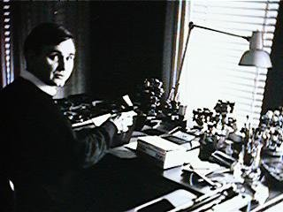
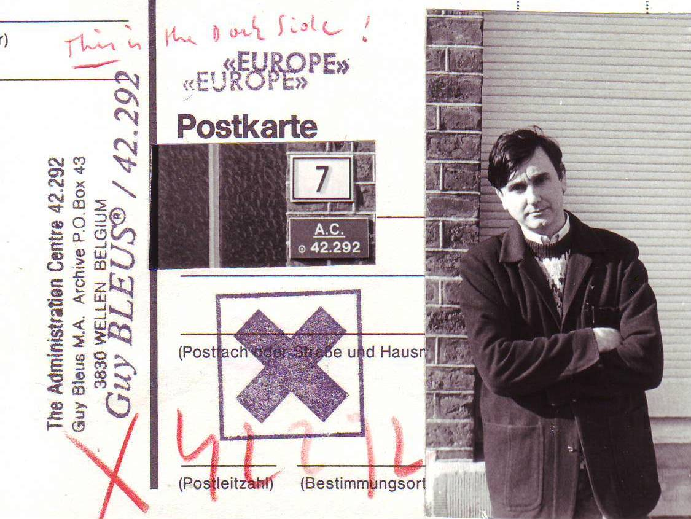

Back


Guy Bleus
- Guy Bleus was born in October 23, 1950 in Hasselt, Belgium. He is an artist, archivist and writer.
- He is associated with olfactory art, visual poetry, performance art and the mail art movement and his work covers different areas, including administration (which he calls Artministration), postal and olfactory communication.
- Bleus was the first artist who systematically used scents in plastic arts. Since 1979 he showed smell paintings, mailed perfumed objects and made aromatic installations; he also created spray performances where he sprayed a mist of fragrance over the audience.
- Exploring the possibilities of communication media as art media, he investigated the postal system in Indirect correspondence (1979) and searched for an alternative postal system in Airmail by balloons. Together with Charles François he was a pioneer using a computer connected to a modem for artistic communication (in 1989). He also applied reproduction media such as Microfilm, CD-ROM and DVD-ROM for artistic reasons.